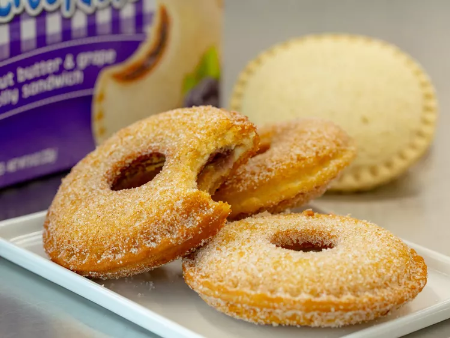

Uncrustable Donuts
Home

Description
The best way to serve a PB&J is in donut form. With the help of Uncrustables, you can
whip up PB&J (or just peanut butter, or chocolate-hazelnut, you get the idea) donuts
in just 15 minutes. Cinnamon sugar gives the outside a nice, churro-like crunch, which
perfectly complements the creamy center.
Ingredients
- 1 uncrustables sandwich
- 6 cups canola or peanut oil, or as needed
- 4 tablespoons granulated sugar
- 1/2 teaspoon ground cinnamon
Directions
- Preheat oil to 400 degrees (200 degrees C) in a large saucepan over medium-high heat
- Meanwhile, use a 1-inch cutter to cut a hole in the center of each uncrustable. Press edges
around the center of the hole to seal sandwich closed in the middle.
- Fry each sandwich in hot oil until browned, 8-10 seconds per side. Drain on paper towels.
- Stir together sugar and cinnamon on a plate; dredge donuts lightly in cinnamon sugar